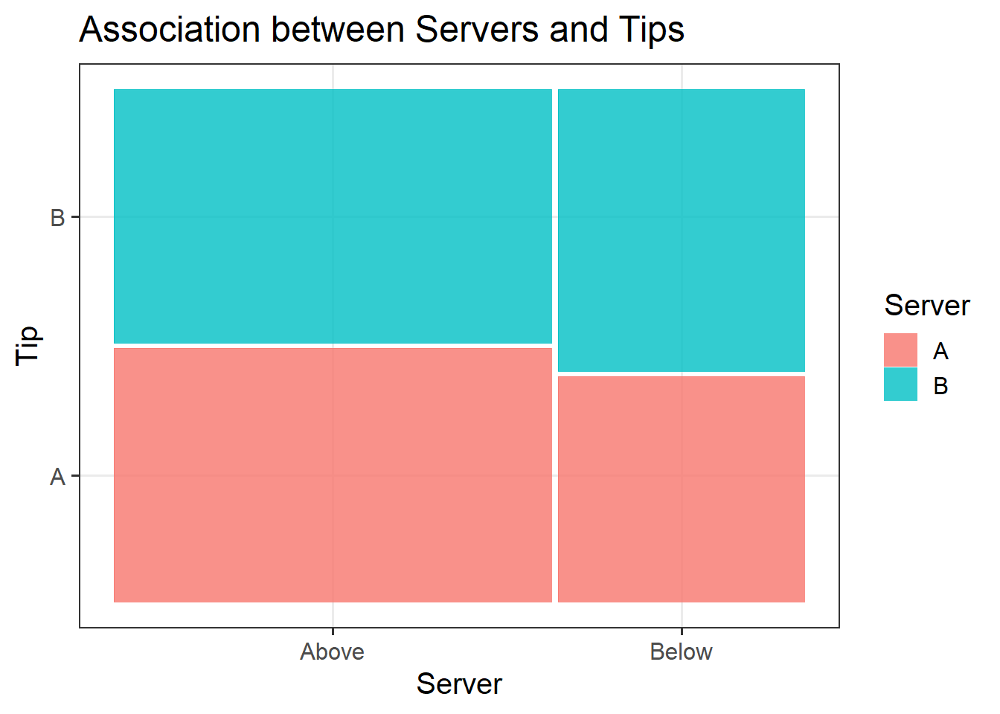
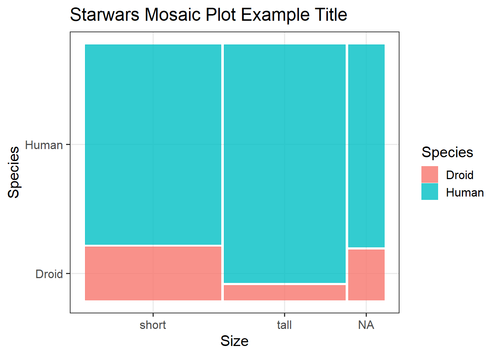
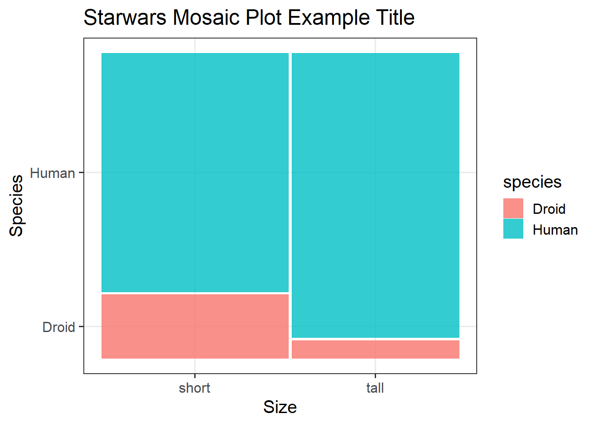

| Variable Name | Description |
|---|---|
| Bill | Size of the bill (in dollars) |
| Tip | Size of the tip (in dollars) |
| Credit | Paid with a credit card? n or y |
| Guests | Number of people in the group |
| Day | Day of the week: m=Monday, t=Tuesday, w=Wednesday, th=Thursday, or f=Friday |
| Server | Code for specific waiter/waitress: A, B, or C |
| PctTip | Tip as a percentage of the bill |
Probability Theory
Semester 1 - Week 7
1 Formative Report B instructions
Are you registered for your group on Learn?
Go to the course Learn page, on the left-hand side click “Groups information”, then the lab, and then the group name. Click Sign up.
Change driver this week
In the next five weeks your group will be creating a new formative report, Formative Report B.
- Choose a driver for this week
- The driver should login to the PC provided with the desk, and access RStudio Server
- The driver is the only person allowed to type the report during this lab
- The others in the group are the navigators
- Navigators are responsible for suggesting and commenting on the strategy that the driver needs to follow to answer the tasks, as well as correct typos and coding errors.
- It is important that your group chooses a driver for this week, and in the next weeks the driver rotates every week to ensure that everyone in the group has contributed to the writing of the report.
Create a new RMD file
Create a new Rmd file for formative report B which you will build upon each week in your group.
At the end of each lab, save the Rmd file and share it with your group. If you go to your group area on Learn, you can click “Send Email” to share the file with your group.
Formative report B - Instructions
In the next five weeks of the course you should produce a PDF report using Rmarkdown for which you will receive formative feedback in week 12.
The report should not include any reference to R code or functions, but be written or a generic reader who is only assumed to have a basic statistical understanding without any R knowledge. You should also avoid any R code output or printout in the PDF file.
You will be required to submit a PDF file by 12 noon on Friday the 2nd of December 2022 via Learn. One person needs to submit on behalf of your group.
-
The report should be at most 6 pages long. At the end of the report, you are allowed two appendices which both don’t count towards the page limit.
- Appendix A will contain any tables or figures which you cannot fit in the page limit (no text allowed)
- Appendix B will contain the code to reproduce the report results (just like Formative Report A).
No extensions allowed. As this is group-based work, no extensions are possible.
Formative report B - Data
Hollywood Movies. At the link https://uoepsy.github.io/data/hollywood_movies_subset.csv you will find data on Hollywood movies released between 2012 and 2018 from the top 5 lead studios and top 10 genres. The following variables were recorded:
-
Movie: Title of the movie -
LeadStudio: Primary U.S. distributor of the movie -
RottenTomatoes: Rotten Tomatoes rating (critics) -
AudienceScore: Audience rating (via Rotten Tomatoes) -
Genre: One of Action Adventure, Black Comedy, Comedy, Concert, Documentary, Drama, Horror, Musical, Romantic Comedy, Thriller, or Western -
TheatersOpenWeek: Number of screens for opening weekend -
OpeningWeekend: Opening weekend gross (in millions) -
BOAvgOpenWeekend: Average box office income per theater, opening weekend -
Budget: Production budget (in millions) -
DomesticGross: Gross income for domestic (U.S.) viewers (in millions) -
WorldGross: Gross income for all viewers (in millions) -
ForeignGross: Gross income for foreign viewers (in millions) -
Profitability: WorldGross as a percentage of Budget -
OpenProfit: Percentage of budget recovered on opening weekend -
Year: Year the movie was released -
IQ1-IQ50: IQ score of each of 50 audience raters -
Snacks: How many of the 50 audience raters brought snacks -
PrivateTransport: How many of the 50 audience raters reached the cinema via private transportation
2 Tasks
For formative report B, you will be asked to perform the following tasks, each related to a week of teaching in this course.
This week you will only focus on task B1.
This week’s task
B1) Create and summarise categorical variables, before calculating probabilities.
B2) Investigate if events are independent, and compute probabilities.
B3) Computing and plotting probabilities with a binomial distribution.
B4) Computing and plotting probabilities with a normal distribution.
B5) Plot standard error of the mean, and finish the report write-up (i.e., knit to PDF, and submit the PDF for formative feedback).
3 B1 sub-tasks
Tip
To see the hints, hover your cursor on the superscript numbers.
In this section you will find some guided sub-steps you may want to consider to complete task B1.
- Choose the top 3 most frequent movie genres, and filter your data to only include these rows.1
- Create a variable called “Rating” where the Audience Score variable is recoded so that those scoring less than or equal to 50 are coded as “Bad” and those scoring over 50 are “Good”.2
- Ensure Rating and Genre are coded as factors.3
- Create a contingency table displaying how many ratings were good or bad for each of your chosen genres.4
- Transform the table of counts to a relative frequency table.5
- Do the numbers in the table satisfy the requirements of probabilities?6
- Instead of checking the probability requirements manually, add a “sum” column to your relative frequency table.7
- Visualise the relative frequency table as a mosaic plot, making sure to add a main title and clear axis titles.8
- Does your plot have any
NAs? If so, you can drop the missing values before re-plotting.9
In the introduction section of your report, write up a small introduction to the data.
In the analysis section of your report, write up a summary of what you have reported above, using proper rounding to 2 decimal places and avoiding any reference to R code or functions.
4 Worked Example
Consider the dataset available at https://uoepsy.github.io/data/RestaurantTips.csv, containing 157 observations on the following 7 variables:
These data were collected by the owner of a bistro in the US, who was interested in understanding the tipping patterns of their customers. The data are adapted from Lock et al. (2020).
library(tidyverse) # we use read_csv and glimpse from tidyverse
tips <- read_csv("https://uoepsy.github.io/data/RestaurantTips.csv")
head(tips)# A tibble: 6 × 7
Bill Tip Credit Guests Day Server PctTip
<dbl> <dbl> <chr> <dbl> <chr> <chr> <dbl>
1 23.7 10 n 2 f A 42.2
2 36.1 7 n 3 f B 19.4
3 32.0 5.01 y 2 f A 15.7
4 17.4 3.61 y 2 f B 20.8
5 15.4 3 n 2 f B 19.5
6 18.6 2.5 n 2 f A 13.4glimpse(tips)Rows: 157
Columns: 7
$ Bill <dbl> 23.70, 36.11, 31.99, 17.39, 15.41, 18.62, 21.56, 19.58, 23.59, …
$ Tip <dbl> 10.00, 7.00, 5.01, 3.61, 3.00, 2.50, 3.44, 2.42, 3.00, 2.00, 1.…
$ Credit <chr> "n", "n", "y", "y", "n", "n", "n", "n", "n", "n", "n", "n", "n"…
$ Guests <dbl> 2, 3, 2, 2, 2, 2, 2, 2, 2, 2, 1, 1, 1, 2, 2, 3, 2, 2, 1, 5, 5, …
$ Day <chr> "f", "f", "f", "f", "f", "f", "f", "f", "f", "f", "f", "f", "f"…
$ Server <chr> "A", "B", "A", "B", "B", "A", "B", "A", "A", "B", "B", "A", "B"…
$ PctTip <dbl> 42.2, 19.4, 15.7, 20.8, 19.5, 13.4, 16.0, 12.4, 12.7, 10.7, 11.…We can filter our data to only include rows of data from Servers A and B, and save this filtered data to a new dataset called “tips2”.
Because we want to include severs A and B, but not C, we can use the != (or does not equal) operator.
Some common operators include:
| Operator | Description |
|---|---|
| < | less than |
| > | more than |
| <= | less than or equal to |
| >= | less than or equal to |
| == | (only) equal to |
| != | not equal to |
| %in% | is <left> a member of <right>? |
Consider if, for example, we wanted to recode the Tip variable so that those tipping less than or equal to 15% were coded as “Below” average, and those tipping over 15% were coded as “Above” average (15% being used as below/above average tips cut-off in relation to usual US tipping rates). To do so, we could create a new variable called “Tip_Avg”.
Above Below
80 45 Now that we have the variables we want, it would be a good point to make these both factors:
To visually represent the distribution of how many customers were served by each server and if they left a below or above average tip, we could Create a contingency table:
freq_tbl <- table(tips2$Server, tips2$Tip_Avg)
freq_tbl
Above Below
A 40 20
B 40 25We could then transform the table of counts above to instead represent a relative frequency table:
rel_freq_tbl <- freq_tbl %>%
prop.table()
rel_freq_tbl
Above Below
A 0.32 0.16
B 0.32 0.20Before we interpret our results, we must ensure that the numbers above satisfy the requirements of probabilities. We can do this two ways:
Check that all values in the proportions table are greater than or equal 0, and less than or equal to 1:
all(rel_freq_tbl >= 0)[1] TRUEall(rel_freq_tbl <= 1)[1] TRUEInstead of checking manually, we can use the function addmargins() to check that the probabilities sum to 1:
rel_freq_tbl <- freq_tbl %>%
prop.table() %>%
addmargins()
rel_freq_tbl
Above Below Sum
A 0.32 0.16 0.48
B 0.32 0.20 0.52
Sum 0.64 0.36 1.00In order to visualise our results in a figure, we could use a mosaic plot:
library(ggmosaic)
mos_plot <- ggplot(tips2) +
geom_mosaic(aes(x = product(Server, Tip_Avg), fill = Server)) +
labs(title = "Association between Servers and Tips", x = "Tip", y = "Server")
mos_plot
Example writeup
More customers tipped above (64%) than below (36%) average. Both Server A and Server B received an equal distribution of tips above average (32%), but server B had a higher proportion of tips below average (20%) in comparison to server A (16%). These associations are visually represented in Figure 3.
5 Student Glossary
To conclude the lab, add the new functions to the glossary of R functions.
| Function | Use and package |
|---|---|
filter |
? |
mutate |
? |
drop_na |
? |
factor |
? |
table |
? |
ifelse |
? |
prop.table |
? |
addmargins |
? |
all |
? |
| |
? |
geom_mosaic |
? |
References
Lock, Robin H, Patti Frazer Lock, Kari Lock Morgan, Eric F Lock, and Dennis F Lock. 2020. Statistics: Unlocking the Power of Data. John Wiley & Sons.
Footnotes
-
Hint: use
sort(table(DATA$COLUMN))to find top 3 movie genres, andfilter()to select the specific 3 genres.Example: For the
starwarsdataset, we can filter to include only the two most frequent species, Humans and Droids, via the following code:↩︎# sort the frequency table sort(table(starwars$species)) # or, for decreasing order, you can use: sort(table(starwars$species), decreasing = TRUE) # keep only the rows where species is Human or Droid # in R, or is the vertical bar | starwars2 <- starwars %>% filter(species == "Human" | species == "Droid") -
Hint: use
ifelse()andmutate()functions to create a new ‘Rating’ variable capturing whether movies are good or bad.Example: For the
starwarsdataset, we can create a variable to capture whether characters were short (<180cm) or tall (>180cm) based on their recorded height using the following code:In the code above,
mutate()changes to data to include a column namedsize, computed with the computation that follows the equal sign.
Theifelsefunction checks a condition (isheight < 180?) and uses the value's'if the condition is TRUE, and't'if the condition is FALSE.↩︎ -
Hint: use the
factor()function.Example: For the starwars data, if I wanted to give better labes for my size variable, I could use the following code. Since the names are fine as is for species, I will just specify
factor().↩︎ -
Hint: use the
table()function, passing to it the two columns that you want to be included in your contingency table.Example: For the
starwarsdataset, if I wanted a contingency table displaying how many humans and droids were short and tall, I could use the following code:↩︎swars_freq_tbl <- table(starwars2$species, starwars2$size) swars_freq_tblshort tall Droid 4 1 Human 15 16 -
Hint: use the
prop.table()function. You will want to pass your contingency table created above to this.Example: For the
starwarsdataset, if I wanted a relative frequency table, I could use the following code:↩︎swars_rel_freq_tbl <- swars_freq_tbl %>% prop.table() swars_rel_freq_tblshort tall Droid 0.11111111 0.02777778 Human 0.41666667 0.44444444 -
Hint: Recall the requirements of probabilities - are the proportions >= 0 or <= 1?; and that the values in the relative frequency table should sum to 1. The
all()andsum()functions could be useful here.Example: For the
starwarsdataset, I could check these requirements using the following code:↩︎all(swars_rel_freq_tbl >= 0)[1] TRUEall(swars_rel_freq_tbl <= 1)[1] TRUEsum(swars_rel_freq_tbl)[1] 1 -
Hint: Use the
addmargins()function.Example: For the
starwarsdataset, I could add this using the following code:↩︎swars_rel_freq_sum <- swars_freq_tbl %>% prop.table() %>% addmargins() swars_rel_freq_sumshort tall Sum Droid 0.11111111 0.02777778 0.13888889 Human 0.41666667 0.44444444 0.86111111 Sum 0.52777778 0.47222222 1.00000000 -
Hint: Make sure to load the
ggmosaic()package so that you can specifygeom_mosaic()when building your plot. To add a title, as well as x- and y-axis titles, specifylabs(title = , x = , y = ).Example: For the
starwarsdataset, I create a mosaic plot using the following code:↩︎library(ggmosaic) m_plot <- ggplot(starwars2) + geom_mosaic(aes(x = product(species, size), fill = species)) + labs(title = "Starwars Mosaic Plot Example Title", x = "Size", y = "Species", fill = "Species") m_plot
Figure 1: Starwars Mosaic Plot Example Title -
Hint: Here you could make sense of the
drop_na()function.Example: For the
starwarsdataset, I do have NAs in my ‘size’ variable, so I need to remove these before re-plotting:↩︎library(ggmosaic) m_plot <- ggplot(starwars2) + geom_mosaic(aes(x = product(species, size), fill = species)) + labs(title = "Starwars Mosaic Plot Example Title", x = "Size", y = "Species", fill = "Species") m_plot
Figure 2: Starwars Mosaic Plot Example Title - No NAs